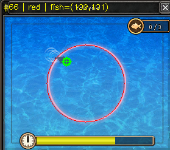

BeSafeFish analizuje obraz gry w czasie rzeczywistym za pomocą CNN. Nie modyfikuje plików gry, nie odczytuje pamięci procesu - widzi to, co Ty widzisz na ekranie.
Jedyny bot do łowienia oparty na sztucznej inteligencji, który nie dotyka plików gry.
Wytrenowany model PatchCNN rozpoznaje ryby na ekranie z wysoką precyzją. Żadnych reguł "na sztywno" - bot uczy się rozpoznawać wzorce.
Nie wstrzykuje kodu, nie modyfikuje plików klienta, nie czyta pamięci procesu. Analizuje wyłącznie obraz ekranu - tak jak Ty patrzysz na monitor.
Odejmowanie tła i klasyfikacja CNN eliminują fałszywe trafienia. Bot reaguje tylko na prawdziwe ryby.
Inferencja ONNX w milisekundach. Bot łapie ryby szybciej niż człowiek - bez zmęczenia, 24 godziny na dobę.
Aplikacja desktopowa z ciemnym motywem. Zaloguj się, kliknij "Start" i gotowe. Żadnej konfiguracji.
Zarejestruj się, wybierz plan i korzystaj. Darmowy plan pozwala przetestować bota przed zakupem.
Cały proces zajmuje ułamki sekund i nie wymaga dostępu do plików gry.
Bot robi zrzut wybranego regionu ekranu za pomocą biblioteki MSS. Gra nie wie, że jest obserwowana.
Algorytm porównuje klatki i wykrywa ruch - obiekty, które mogą być rybą.
Model PatchCNN (ONNX) analizuje każdy wykryty obiekt i decyduje: ryba czy nie ryba.
Jeśli CNN potwierdzi rybę - bot klika w odpowiednie miejsce. Cały cykl powtarza się automatycznie.
Tradycyjne boty modyfikują pamięć gry, wstrzykują DLL-ki lub czytają pakiety sieciowe. Każda z tych metod zostawia ślady, które antycheat może wykryć.
BeSafeFish działa inaczej. Robi dokładnie to, co robi człowiek - patrzy na ekran i klika myszką. Żadnego dostępu do procesu gry, żadnych zmodyfikowanych plików.
Aktualnie bot obsługuje jedną mini-grę - ale robi to perfekcyjnie.

Klasyczna mini-gra z Metin2 - postać zarzuca wędkę, a na ekranie pojawia się niebieskie okno z wodą. Rybka pojawia się losowo i trzeba ją kliknąć w odpowiednim momencie.
Zarejestruj się, pobierz aplikację i zacznij łowić. Instalacja zajmuje mniej niż minutę.
Windows 11 - standalone .exe
Pobierz (.zip)~113 MB | Windows 11 | Wymaga uruchomienia jako Administrator
Nie wymaga instalacji Pythona ani żadnych bibliotek.
Rozpakuj, uruchom BeSafeFish.exe jako Administrator i gotowe.
Rejestracja jest darmowa. Po założeniu konta otrzymujesz darmowy plan z limitem 50 rund dziennie - wystarczająco, żeby przetestować bota.